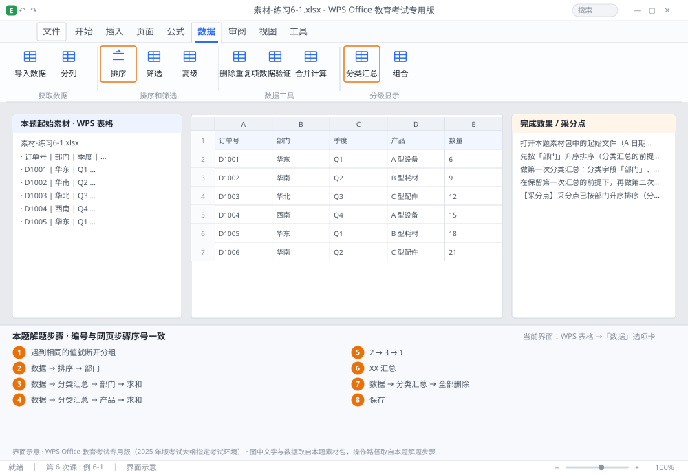

完成比对文档 · 例 6-1
分类汇总：先排序 + 按部门求和 + 嵌套产品二级汇总 ｜ 第 6 次课 / WPS 表格 ｜ 网页：实操-表格3.html ｜ 考试环境：WPS Office 教育考试专用版（2025 年版考试大纲指定考试环境）
用途 本页按修订后的题目要求与解题步骤生成，是交卷自查的结果基准：
逐项列出每一步应出现的可复核结果，配合模拟操作截图与解题结果文件使用。
它不是素材包的一部分，不会预置答案动作；起始素材仍从本题素材包下载。
一、本题起始素材包
目录：练习素材/练习6-1-分类汇总/ ｜
下载包：练习素材/下载/练习6-1-分类汇总.zip
二、题目要求
- 打开本题素材包中的起始文件（A 日期、B 部门、C 产品、D 金额，20 行，部门顺序是乱的）。
- 先按「部门」升序排序（分类汇总的前提）。
- 做第一次分类汇总：分类字段「部门」、汇总方式「求和」、汇总项「金额」。
- 在保留第一次汇总的前提下，再做第二次汇总：分类字段「产品」、求和「金额」（嵌套）。
- 用左侧分级按钮切换到级别 2，只显示汇总行。
- 再切回级别 3 查看明细，最后删除全部分类汇总。
- 保存为 学号-姓名-练习6-1.xlsx。
三、解题步骤（编号与下方核对表、截图编号一致）
- 为什么必须先排序。分类汇总是「遇到相同的值就断开分组」，部门乱序时同一个部门会被分成好几段，各自汇总——数字看起来像对的，其实全错。
- 排序。点数据区任一单元格 →「数据」→「排序」→ 主要关键字「部门」→ 升序 → 确定。
- 第一次汇总。仍点数据区任一单元格 →「数据」→「分类汇总」→ 分类字段「部门」→ 汇总方式「求和」→ 选定汇总项只勾「金额」→ 确定。此时表格左侧出现 1/2/3 三个分级按钮。
- 第二次汇总。再次「数据」→「分类汇总」→ 分类字段改「产品」→ 汇总方式「求和」→ 汇总项「金额」→ 取消勾选「替换当前分类汇总」 → 确定。不取消，第一级汇总会被覆盖，嵌套就没了。
- 看分级显示。点左上角「2」→ 只显示部门汇总行；点「3」→ 显示全部明细；点「1」→ 只显示总计。
- 认识汇总行。每段末尾的「XX 汇总」行是自动插入的，不能手工删，否则汇总结构错乱。
- 删除汇总。「数据」→「分类汇总」→ 点「全部删除」→ 表格恢复原样（但排序仍保留）。
- 保存。Ctrl+S。
四、完成效果 / 采分点
采分点已按部门升序排序（分类字段有序） · 第一次汇总为部门+金额求和 · 第二次汇总为产品+金额且未替换前一次 · 分级显示可切换 1/2/3 级 · 已全部删除汇总
五、逐项完成核对表
| 步骤 | 关键操作路径 | 应出现的结果（可复核） |
|---|
| 1 | 为什么必须先排序 | 「遇到相同的值就断开分组」 |
| 2 | 排序 | 「数据」、「排序」、「部门」 |
| 3 | 第一次汇总 | 「数据」、「分类汇总」、「部门」、「求和」、「金额」 |
| 4 | 第二次汇总 | 「数据」、「分类汇总」、「产品」、「求和」、「金额」 |
| 5 | 看分级显示 | 「2」、「3」、「1」 |
| 6 | 认识汇总行 | 「XX 汇总」 |
| 7 | 删除汇总 | 「数据」、「分类汇总」、「全部删除」 |
| 8 | 保存 | 保存 |
六、模拟操作截图

界面示意 · WPS Office 教育考试专用版 · 橙色编号与本题解题步骤序号一致；
图中文字与数据取自本题素材包，功能入口取自本题解题步骤。
核对方法：按网页解题步骤完成并另存自己的成稿后，逐行比对本表第 3 列的
参数、公式、区域、文件名与对象数量；再对照网页「完成效果 / 采分点」检查版式是否一致。